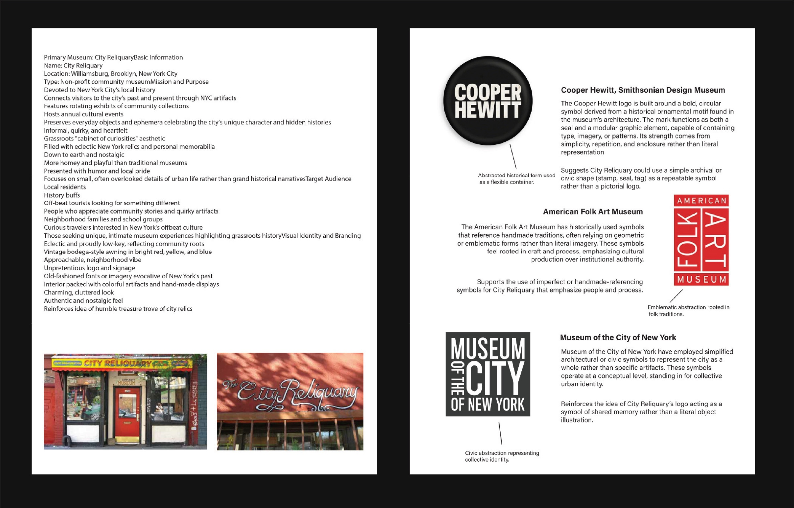
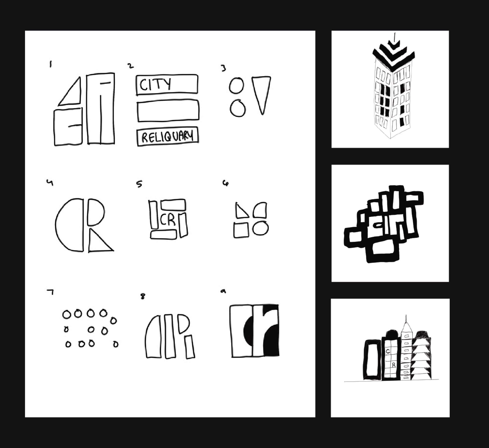
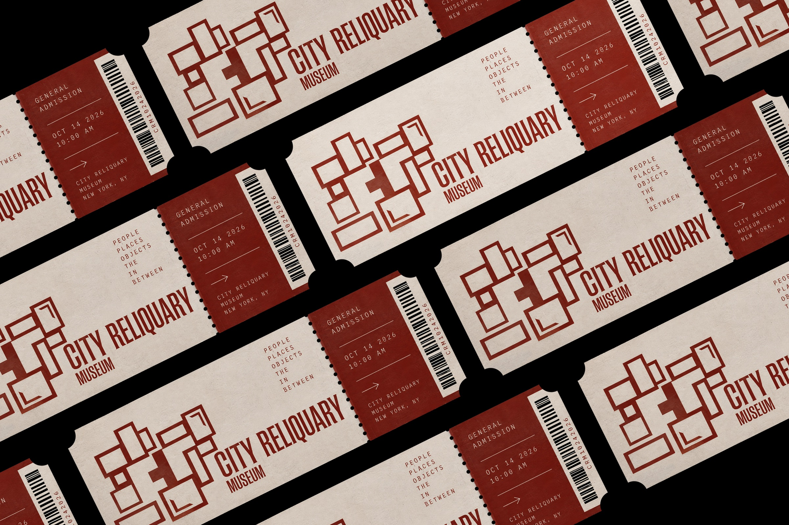
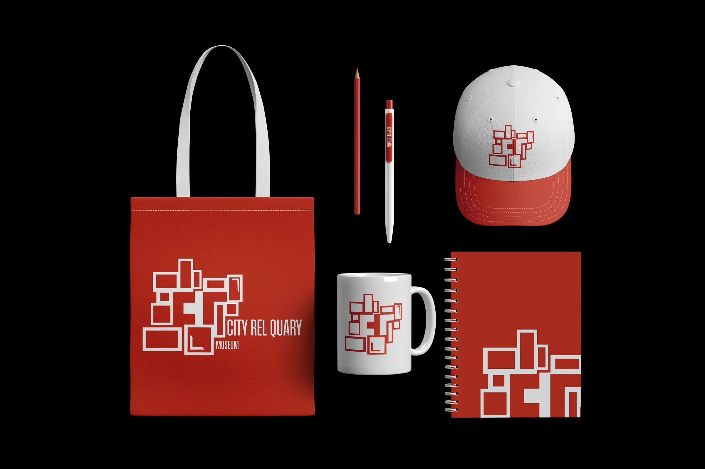
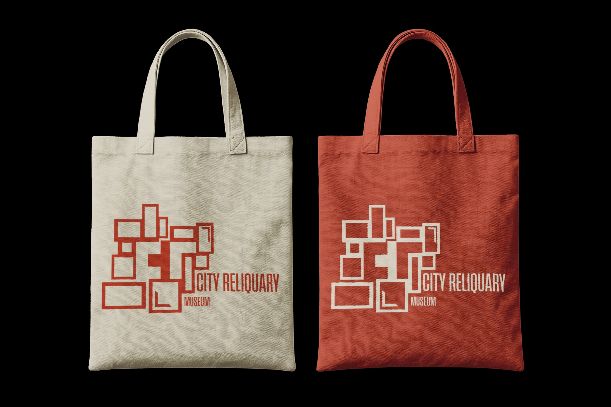
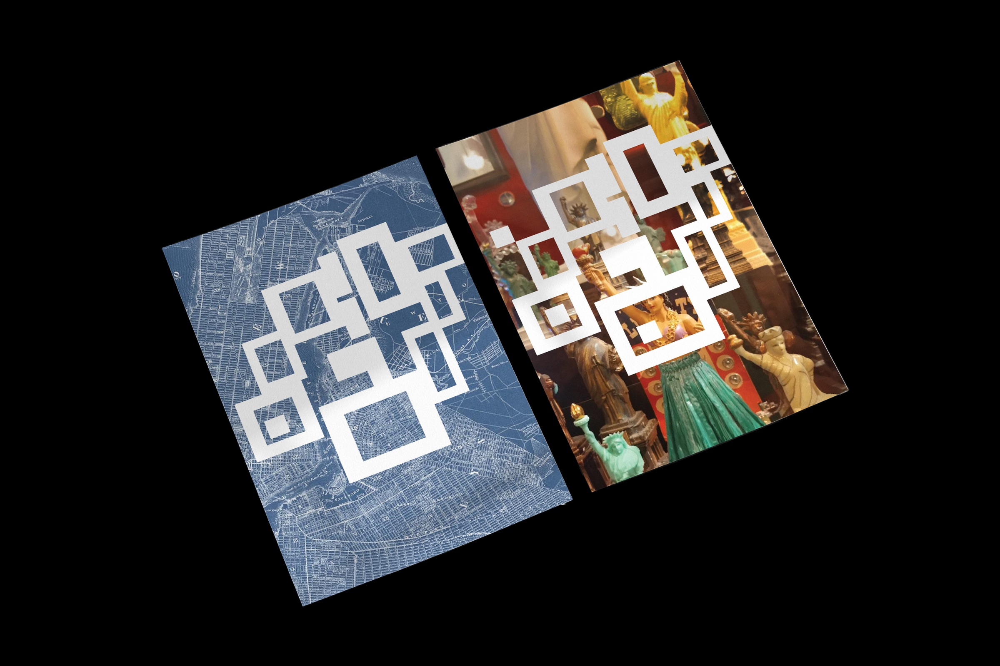

City Reliquary
A visual identity for City Reliquary, a community-focused New York City museum, built around a collage-like CR mark formed from overlapping rectangular frames.
- Deliverables
- CR mark, identity system, posters, signage
City Reliquary celebrates New York City's history through everyday objects, personal collections, and overlooked artifacts. The identity draws on the idea of collecting and preserving fragments of history, using a collage of frames to create a distinctive mark that reflects the museum's approach.
- Brand research and visual analysis
- Logo exploration and development
- Negative-space CR mark
- Identity system
- Supporting merchandise applications
Objects worth keeping
City Reliquary collects everyday artifacts and the stories attached to them, so I started with the museum itself: the red storefront, the script sign, the cabinet-of-curiosities feel. Then I looked at how Cooper Hewitt, the American Folk Art Museum and the Museum of the City of New York hold a name inside a simple shape.

Finding the mark
I started with nine small thumbnails, trying the C and R as blocks, circles, a stacked name and a half circle. Then I developed three: a tower, a skyline and a cluster of heavy boxes. The cluster won, because the negative space between the boxes could do the work of the second letter.

The logo is constructed from a collage of outlined rectangular frames arranged in a compact, overlapping composition. The frames create a sense of layered images and collected fragments, while the negative space between them forms the initials C and R. This allows the mark to function as both a monogram and a visual reference to the museum's collection of objects and stories.
The identity uses a limited palette of rust red and white. The mark appears alongside a condensed City Reliquary Museum wordmark on a tote bag, while a larger, cropped version covers a red spiral notebook. The same elements carry across a mug, cap, and pens, adapting to different surfaces and scales.
The overlapping frames give the identity its structure and visual character. Keeping the palette and core mark consistent allows the applications to feel connected, while changes in scale and cropping introduce variation without losing recognition.



